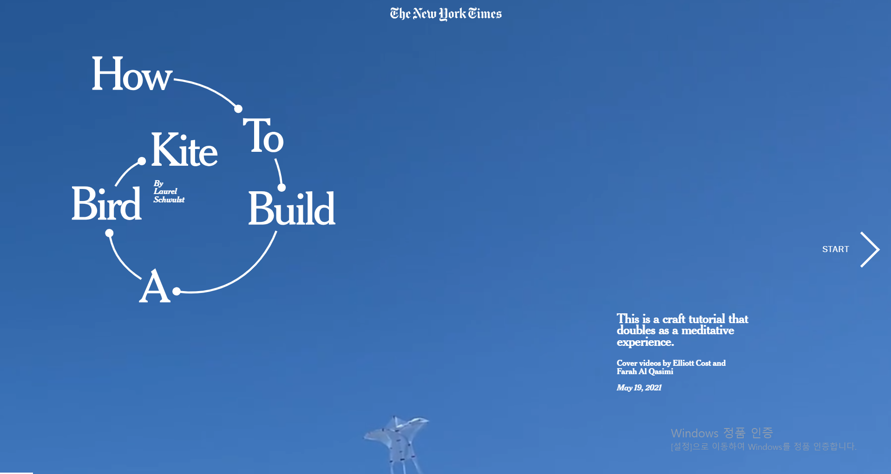

How to Build a Bird Kite
| pc |  |
| 모바일 |  |
글자를 크고 디자인적으로 배치했다. 새 연을 어떻게 만드는지라는 제목을 직관적으로 보여주는 영상을 처음으로 보여주어 방문자에게 정확한 메시지를 보낸다. 다음 영상으로 넘어가는 것이 부드럽게 넘어가서 흐름이 잘 흐를 수 있게 만들어준다. 뒤쪽의 영상으로 가면 직접 재료를 구하고 연을 만드는 영상을 삽입한 것이 제작자가 웹사이트에 대한 애정을 보여준다. 각 장면마다 설명하는 글을 타이핑하는 것처럼 효과를 넣어서 움직이는 영상에 맞게 행동감을 글자에 불어넣어 어색하지 않게 보이도록 만들었다. 맨 밑에 페이지가 얼마나 남았는지 보여주는 하얀선과 같은 사소한 부분을 신경 썼다. 맨 위에 뉴욕타임스 페이지로 연결되는 글자가 홈페이지와 같은 글꼴로 삽입해서 눌러서 들어가기 전 미리 볼 수 있는 기능을 한다. 모바일에는 작은 화면에 방해되지 않게 다음 페이지로 넘어가는 화살표를 밑에 두었다. 제목을 줄이지 않고 pc버전과 같은 크기로 넣어서 강조했다.